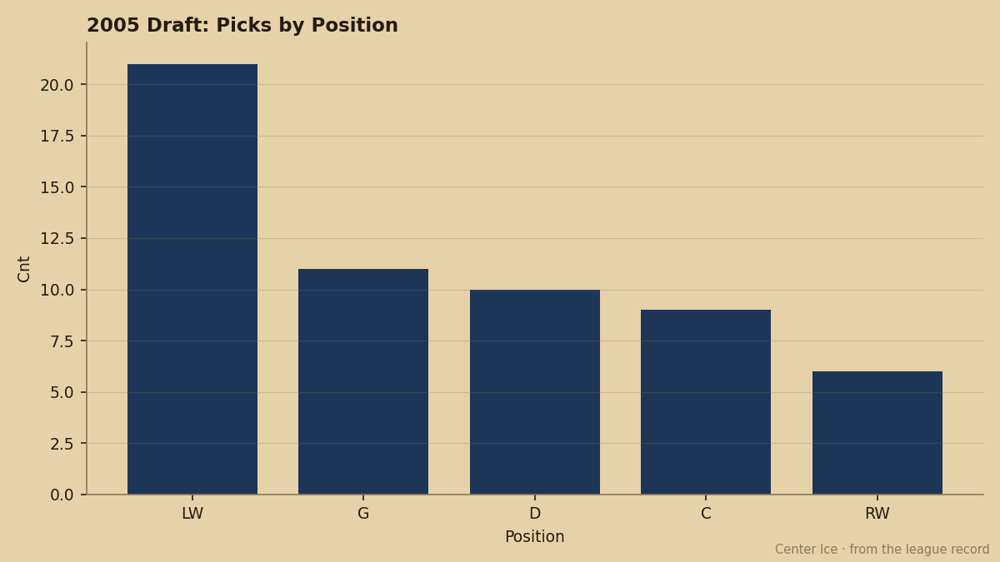
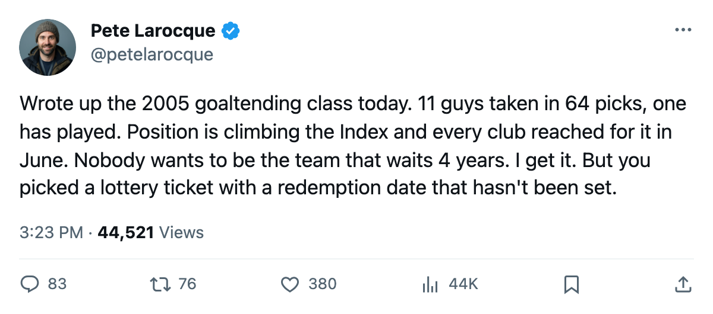
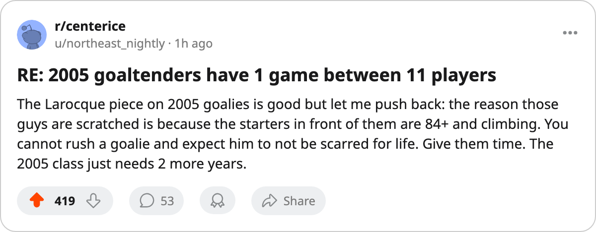

CGY
CGY FLA
FLA STL
STLThe 2005 Draft Took 11 Goaltenders. One Has Played.
Three went in Round 1, five in Round 2. The Development Index says the position is climbing. The glass says this class is not ready.
 Pete LarocqueScouting editor · The Prospect File
Pete LarocqueScouting editor · The Prospect File
The piece
The  Buffalo Sabres took a goaltender with the 11th pick in June.
Buffalo Sabres took a goaltender with the 11th pick in June.  Washington Capitals went 25th,
Washington Capitals went 25th,  Tampa Bay Lightning 26th. By the end of Round 2, clubs had used 8 of their 60 selections on goaltenders. The 2005 draft class carries 11 between the pipes in 64 picks on record, the most of any recent class in raw count.
Tampa Bay Lightning 26th. By the end of Round 2, clubs had used 8 of their 60 selections on goaltenders. The 2005 draft class carries 11 between the pipes in 64 picks on record, the most of any recent class in raw count.
One of those 11 has taken an NHL ice: Francois Anderson78 started 1 game for Buffalo, faced 60 minutes, and went back to the bench. The other 10 are scratched.

The league is in a goaltending arms race. The Bureau's Development Index has 5 goaltenders among its top 20 risers this month. Jason Bacashihua91 sits at +10, lifting his overall to 89 at  Dallas Stars.
Dallas Stars.  Pascal Leclaire93 is +9 at 93 for
Pascal Leclaire93 is +9 at 93 for  Columbus Blue Jackets.
Columbus Blue Jackets.  Rick DiPietro87 reads +9 at 87 in New York. Josh Harding82 carries +8 at 84 for Washington. Ari Ahonen87 sits at +7 at 83 for
Rick DiPietro87 reads +9 at 87 in New York. Josh Harding82 carries +8 at 84 for Washington. Ari Ahonen87 sits at +7 at 83 for  Chicago Blackhawks.
Chicago Blackhawks.
Those five were drafted in 2001 and 2002. Bacashihua went 26th in 2001, Leclaire 8th in that same draft, and Harding 38th in 2002. The goalies climbing the Index right now are 3 to 4 seasons removed from their own draft night.
The 2005 class, by the numbers
Teams responded to that pattern in June. The 2004 draft carried 8 goaltenders in 55 picks, 2 in Round 1 (Marcel Janota79 at 7 to Carolina, Steffen Prommersberger64 at 14 to Ottawa). The 2001 draft carried 8 in 40. The 2005 class jumped to 11 in 64, and spread them across the first 3 rounds: 3 in Round 1, 5 in Round 2, 3 in Round 3.
Here is where all 11 sit today:
| pick | round | player | team | overall | potential | status |
|---|---|---|---|---|---|---|
| 11 | 1 | Francois Anderson | BUF | 74 | 59 | 1 gp, 60.0 mpg |
| 25 | 1 | Norbert Ausdenbirken66 | WSH | 66 | 65 | scratched |
| 26 | 1 | Mathieu Beaucage67 | TB | 66 | 55 | scratched |
| 32 | 2 | Mathieu Houde74 | CGY | 74 | 59 | scratched |
| 33 | 2 | Björn Musial72 | FLA | 72 | 71 | scratched |
| 46 | 2 | Mika Rajamaki64 | STL | 64 | 64 | scratched |
| 48 | 2 | Vyacheslav Sisoyev63 | DET | 64 | 60 | scratched |
| 57 | 2 | David Strom68 | DAL | 66 | 58 | scratched |
| 63 | 3 | Sami Sundblad63 | FLA | 63 | 82 | scratched |
| 68 | 3 | Vladimir Zib65 | MIN | 65 | 55 | scratched |
| 69 | 3 | Karel Zizka62 | CBJ | 62 | 73 | scratched |
The overalls run from 62 to 74. Three carry a potential grade at or above 71: Musial at 71, Zizka at 73, and Sundblad at 82. Anderson's 59 potential is the lowest in the group, and he is the one who has played.
The gap the picks cannot close
Goaltending development runs 3 to 4 seasons from draft to reliable NHL starter in every recent class I can trace. Leclaire went 8th in 2001 and sits at 93 now, 10 games into this season. DiPietro is 24 and just cracked the top 10 on the Index. The men who drafted goaltenders in June 2005 are looking at a 3-or-4-year wait for a payoff.
The Index tells clubs that goaltenders are the fastest-rising assets in the league right now. The position moves on form more than any other, and these goalies are all carrying +7 or better.
But the 2005 draft's goalies are 19 and 20 years old with overalls in the low 60s and 70s, and the only one who has seen an NHL crease faced 60 minutes in a single start. Buffalo scratched him after that game.
The clubs holding these picks, Buffalo, Washington, Tampa Bay, Calgary, Florida, St. Louis, Detroit, Dallas, Minnesota, Columbus, are all carrying a lottery ticket they cannot cash for 3 seasons. In a league where the Development Index moves fast and a +9 on the Index lifts a 21-year-old to an 84 overall in a single edition, waiting for a 63-overall goaltender to reach his 82 potential is an act of faith.
The 2005 skaters have at least scored something. These 11 have a combined 1 game and 60 minutes.

